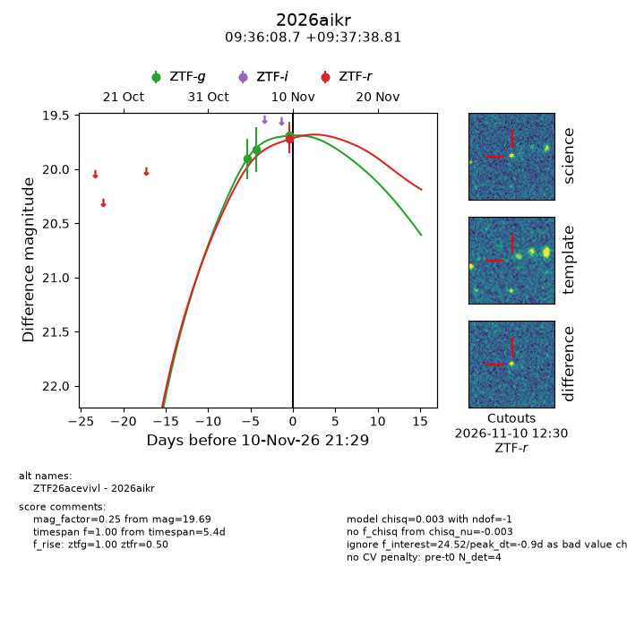
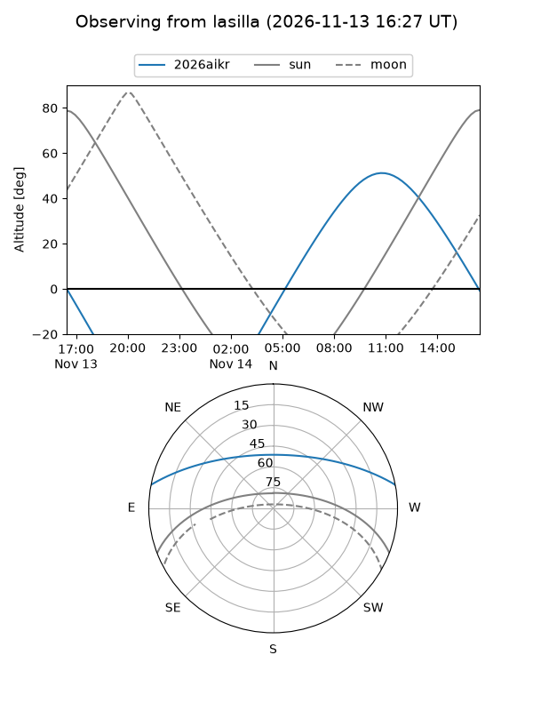
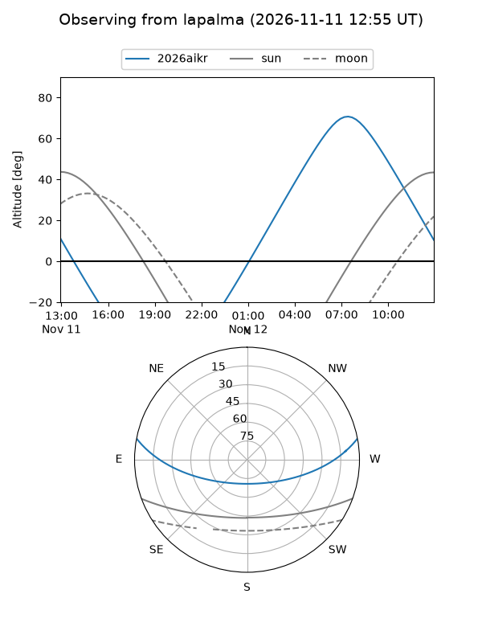
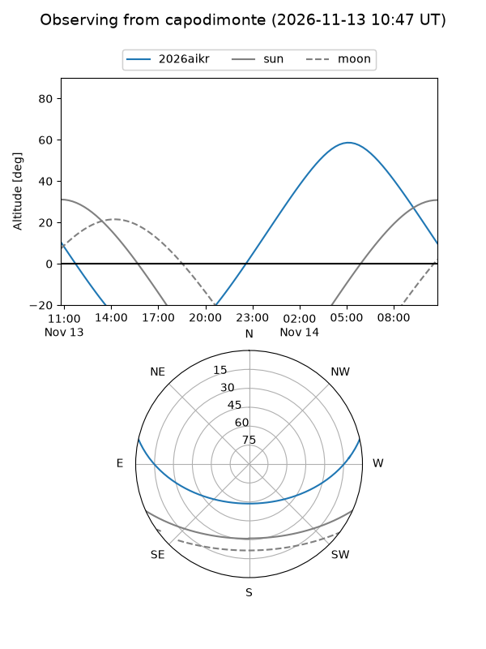
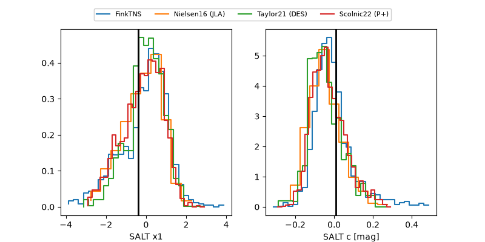

2026aikr
Target 2026aikr at 2026-11-10 21:32
Aliases and brokers:
FINK-ZTF: ztf.fink-portal.org/ZTF26acevivl
Lasair-ZTF: lasair-ztf.lsst.ac.uk/objects/ZTF26acevivl
ALeRCE-ZTF: alerce.online/object/ZTF26acevivl
YSE-PZ: ziggy.ucolick.org/yse/transient_detail/2026aikr
TNS name: wis-tns.org/object/2026aikr
Direct TNS query: direct search
alt names
ZTF26acevivl (ztf,fink_ztf)
2026aikr (tns,yse)
Coordinates:
equatorial (ra, dec) = 144.0361,+9.62745
equatorial (HMS+DMS) = 09:36:08.66,+09:37:38.81
galactic (l, b) = (224.1471,+40.84078)
Flags:
peak dt: -0.9
Photometry:
last ztfg=19.69, ztfr=19.72
3 ztfg, 1 ztfr detections
Lightcurve

Visibility



Additional plots
